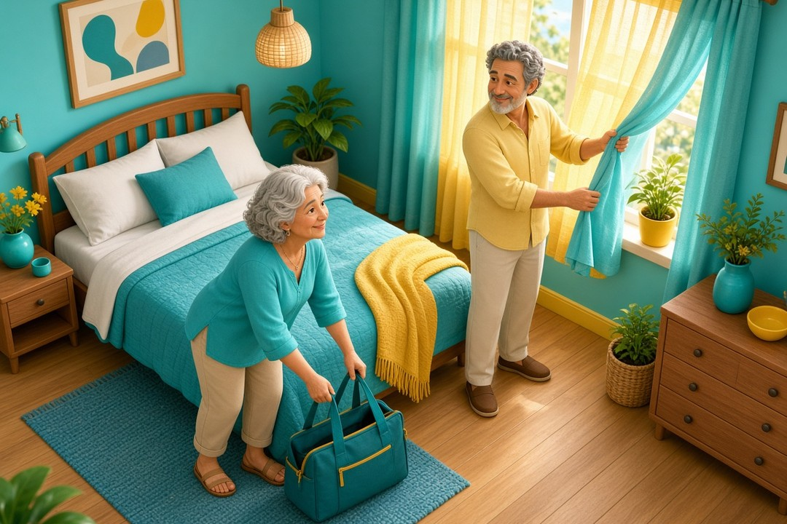

Wstawanie w nocy do toalety po 50. roku życia łatwo przypisać wiekowi albo prostacie. Zamiast zgadywać, przyjrzyj się temu, co dzieje się ze snem i oddawaniem moczu. Dzienniczek pomoże opisać problem, a tabela objawów podpowie, kiedy nie odkładać pomocy.
Szybka odpowiedź
Nykturia to oddawanie moczu w głównym okresie snu: po pierwszym zaśnięciu, z powrotem do snu lub zamiarem dalszego spania. Już jeden epizod może spełniać tę definicję, ale sama liczba wizyt nie określa przyczyny ani pilności pomocy. Jeśli problem się utrzymuje lub przeszkadza, umów konsultację; przy objawach alarmowych z tabeli nie czekaj na planową wizytę.
Kluczowe wnioski
- Już jedna wizyta w toalecie podczas głównego okresu snu może być nykturią; nie mówi to jeszcze, co ją powoduje ani czy wymaga leczenia.
- Zapisuj przez co najmniej 3 dni godziny i objętości oddawanego moczu, picie oraz przebieg snu; sam licznik pobudek nie wystarczy.
- Nie ograniczaj koniecznych płynów ani nie zmieniaj samodzielnie leków, żeby rzadziej korzystać z toalety.
- Nagła całkowita niemożność oddania moczu wymaga natychmiastowej pomocy; przy nasilonej duszności dzwoń pod 112 lub 999.
Co liczymy jako nykturię, a czego nie?
Nykturia to liczba oddań moczu w głównym okresie snu. Ten okres zaczyna się zaśnięciem, a kończy decyzją, że wstajesz na kolejny dzień. Po oddaniu moczu wracasz do snu albo nadal zamierzasz spać. Definicja Międzynarodowego Towarzystwa Kontynencji (ICS) nie wymaga, by każda próba ponownego zaśnięcia się udała.
Wizyta w toalecie przed pierwszym zaśnięciem nie jest epizodem nykturii. Nie doliczaj też wizyty po ostatecznym wstaniu na dzień. Przy pracy zmianowej główny okres snu może przypadać za dnia: liczy się Twój sen, nie to, czy za oknem jest ciemno.
Jeśli obudził Cię hałas i dopiero potem korzystasz z toalety, nie zakładaj, że obudził Cię pęcherz. Zapisz tę kolejność. Takie oddanie moczu może nadal mieścić się w definicji nykturii, jeśli następuje podczas głównego okresu snu i zamierzasz dalej spać. Samo liczenie wizyt nie wyjaśnia przyczyny pobudek.
Już jeden epizod może spełniać definicję, ale nazwa objawu nie jest rozpoznaniem choroby. Osobno ocenia się, jak bardzo nocne wizyty Ci przeszkadzają i czy towarzyszą im inne dolegliwości. Nie trzeba czekać na określoną liczbę pobudek, żeby omówić dokuczliwy lub utrzymujący się problem z lekarzem.

Kiedy szukać pomocy, a kiedy umówić wizytę?
O pilności pomocy decydują objawy towarzyszące, nie sama liczba nocnych wizyt. Nagła całkowita niemożność oddania moczu wymaga natychmiastowej pomocy medycznej. Widoczna krew w moczu także wymaga sprawdzenia, nawet gdy jest jej mało i nic nie boli.
| Pilność | Sytuacja | Co zrobić | Źródło |
|---|---|---|---|
| Natychmiast | Nagle nie możesz w ogóle oddać moczu mimo pełnego pęcherza, zwłaszcza z bólem podbrzusza. | Szukaj natychmiast pomocy medycznej; nie czekaj na planową wizytę. | NIDDK |
| Natychmiast | Masz nasiloną duszność. | Dzwoń pod 112 lub 999. | NFZ |
| Pilnie | Widzisz krew w moczu lub podejrzewasz jej obecność, nawet przy małej ilości. | Pilnie skontaktuj się z lekarzem po ocenę. | NHS |
| Pilnie | Bólowi lub pieczeniu przy oddawaniu moczu towarzyszą gorączka, dreszcze albo ból boku lub pleców. | Szukaj pilnej oceny lekarskiej; nie czekaj na odległy termin do urologa. | NIDDK |
| Umów wizytę | Nocne oddawanie moczu utrzymuje się lub przeszkadza Ci, bez wymienionych objawów alarmowych. | Umów konsultację, zwykle w podstawowej opiece zdrowotnej (POZ). | MedlinePlus / NFZ |
Krew w moczu (krwiomocz) lub podejrzenie zakażenia z objawami ogólnymi nie oznaczają automatycznie wezwania karetki. Wymagają jednak pilnego kontaktu, a nie czekania na zwykły odległy termin. Tabela nie pozwala ustalić rozpoznania; przy nasilonej duszności wybierz pomoc ratunkową.
Dlaczego wstajesz: ilość moczu, pęcherz czy sen?
Nocne wizyty mogą wynikać ze zwiększonej produkcji moczu, problemu z jego przechowywaniem lub opróżnianiem pęcherza albo z zaburzeń snu. Te przyczyny mogą występować jednocześnie. Dlatego podobna liczba wizyt u dwóch osób nie musi oznaczać tego samego problemu.
Więcej moczu. Organizm może wytwarzać go dużo w całej dobie albo szczególnie dużo podczas snu. W ocenie bierze się pod uwagę między innymi cukrzycę, choroby nerek, niewydolność serca i leki moczopędne, czyli zwiększające wydalanie moczu. Duże ilości napojów wieczorem, kofeina i alkohol także mogą zwiększać liczbę nocnych wizyt.
Pęcherz i jego opróżnianie. Częste oddawanie małych porcji może towarzyszyć nadreaktywnemu pęcherzowi. W tym zespole występuje nagłe parcie, czyli silna potrzeba oddania moczu, którą trudno odroczyć. Inną możliwością jest pozostawanie moczu w pęcherzu po skorzystaniu z toalety. Nie rozpoznasz tych problemów po samej liczbie nocnych wizyt.
Najpierw pobudka. Zaburzenia snu mogą sprawiać, że korzystasz z toalety, skoro już nie śpisz. W ocenie nykturii uwzględnia się również obturacyjny bezdech senny, czyli powtarzające się przerwy w oddychaniu wskutek zamykania się dróg oddechowych podczas snu. To powód, by opisać lekarzowi także swój sen, nie tylko pęcherz.
U kobiet po menopauzie parcie i częstsze oddawanie moczu mogą towarzyszyć zespołowi moczowo-płciowemu menopauzy (GSM). To zmiany związane ze spadkiem stężenia hormonów, obejmujące okolice intymne i dolne drogi moczowe; mogą im towarzyszyć suchość i podrażnienie. Nie wynika z tego, że każda nocna wizyta jest skutkiem menopauzy. Nykturia, nagłe parcie i nietrzymanie moczu to różne objawy.
U mężczyzn jedną z możliwości jest powiększenie prostaty. Ten gruczoł otacza przewód, którym mocz wypływa z pęcherza; powiększając się, może utrudniać jego opróżnianie. Samo wstawanie nocą nie wystarcza do takiego rozpoznania. Znaczenie mają też inne objawy, na przykład słabszy strumień lub uczucie niepełnego opróżnienia. Przyczyny związane z nerkami, sercem, cukrzycą, snem czy lekami dotyczą również mężczyzn; nie pomijaj ich, skupiając się wyłącznie na prostacie.
Jak prowadzić dzienniczek przez co najmniej 3 dni?
Przez co najmniej 3 dni zapisuj godziny i objętości oddawanego moczu, wypite napoje oraz sen. Dzienniczek mikcji, czyli oddawania moczu, daje więcej informacji niż liczba pobudek. Wybierz dni oddające Twoją zwykłą aktywność, na przykład roboczy i wolny, jeśli tak wygląda Twój tydzień.
| Co zapisujesz | Jak to zrobić |
|---|---|
| Każde oddanie moczu | Zanotuj godzinę i zmierz objętość w ml, w dzień i podczas głównego okresu snu. Zapis „mało” lub „dużo” nie zastępuje pomiaru. |
| Napoje | Zapisuj godzinę, ilość w ml i rodzaj napoju, także kawę, herbatę i alkohol. |
| Sen i pobudki | Zapisz położenie się z zamiarem snu, przybliżone zaśnięcie, pobudki oraz końcowe wstanie na dzień. |
| Co działo się przy pobudce | Zanotuj, czy obudziła Cię potrzeba oddania moczu, czy coś innego, oraz czy po wizycie zamierzasz dalej spać. Jeśli nie wiesz, zaznacz to. |
| Pierwsze oddanie moczu po wstaniu | Zmierz i zapisz także tę objętość. Jest potrzebna do oceny ilości moczu wytworzonego podczas snu, ale nie jest kolejnym epizodem nykturii. |
Zalecenie co najmniej 3 dni podaje NICE dla mężczyzn z dokuczliwymi objawami ze strony dolnych dróg moczowych, a dla kobiet z nietrzymaniem moczu lub pęcherzem nadreaktywnym. Raport terminologiczny ICS wskazuje dzienniczek trzydniowy także przy nykturii.
Nie musisz samodzielnie wyliczać, czy produkujesz za dużo moczu w nocy. Przynieś zapis lekarzowi. Godziny snu, pojedyncze objętości i ilość moczu w całej dobie pozwalają mu odróżnić mechanizmy, których sam licznik nocnych wizyt nie pokazuje.
Co zmienić bezpiecznie i jak przygotować wizytę?
Jeśli wypijasz duże ilości napojów tuż przed snem, spróbuj większą część wypijać wcześniej. Nadal zapewniaj sobie wystarczającą ilość płynów w ciągu dnia. Celem nie jest odwodnienie ani ograniczanie koniecznych płynów; jeśli masz indywidualny plan od lekarza, nie zastępuj go ogólną poradą.
Kofeina i alkohol mogą nasilać problem. Przyjrzyj się zwłaszcza napojom wieczornym i sprawdź, czy ich ograniczenie pomaga. Nie jest to gwarancja, że wszystkie nocne wizyty znikną.
Niektóre leki zwiększają wydalanie moczu lub wpływają na pęcherz i sen. Przygotuj listę wszystkich przyjmowanych preparatów, także kupowanych bez recepty i ziół. Zapytaj lekarza o ich możliwy udział w objawach; nie odstawiaj leków ani nie zmieniaj samodzielnie ich dawek czy pory przyjmowania.
Bez objawów alarmowych zacznij zwykle od lekarza POZ. Opisz, od kiedy trwa problem, czy budzi Cię potrzeba oddania moczu, jak wygląda strumień i czy dolegliwości występują też w dzień. Zabierz dzienniczek i listę leków. Lekarz oceni możliwe przyczyny i dobierze badania do Twoich objawów.
Nie ma jednego obowiązkowego pakietu badań dla każdej osoby z nykturią. NICE zaleca badanie paskowe moczu w początkowej ocenie mężczyzn z objawami z dolnych dróg moczowych. Badania funkcji nerek i PSA, czyli oznaczenie białka związanego z prostatą we krwi, mają określone wskazania. Samo wstawanie nocą nie oznacza automatycznego skierowania każdego na PSA lub USG, czyli badanie ultrasonograficzne.
Na NFZ do pierwszej planowej wizyty u urologa zwykle potrzebne jest skierowanie; do ginekologa-położnika nie. Istnieją też wyjątki związane z uprawnieniami pacjenta. Nie każda nykturia wymaga konsultacji urologicznej: wybór specjalisty zależy od podejrzewanej przyczyny. Zasady skierowań sprawdzono 8 listopada 2026 r.
Najczęściej zadawane pytania
Czy wstawanie w nocy do toalety jest normalne?
Już jedna wizyta podczas głównego okresu snu może być nykturią. Nie oznacza to automatycznie choroby, ale nie daje też pewności, że problem można zignorować. Jeśli objaw się utrzymuje lub przeszkadza, omów go z lekarzem; o pilności decydują także objawy towarzyszące, nie sama liczba wizyt.
Dlaczego wstaję w nocy do toalety?
Możesz wytwarzać więcej moczu, mieć problem z jego przechowywaniem lub opróżnianiem pęcherza albo budzić się z innego powodu i potem korzystać z toalety. Kilka przyczyn może się nakładać. Dzienniczek z objętościami i godzinami snu pomaga opisać różnicę, ale nie zastępuje oceny lekarskiej.
Nykturia jakie badania?
Punktem wyjścia są rozmowa o objawach, lekach i chorobach oraz dzienniczek. Lekarz dobiera dalsze badania do sytuacji. W ocenie mężczyzn z objawami z dolnych dróg moczowych NICE zaleca badanie paskowe moczu, ale PSA czy ocena funkcji nerek zależą od wskazań. Nie trzeba wykonywać tego samego pakietu u wszystkich.
Co zrobić żeby nie wstawać w nocy do toalety?
Zacznij od dzienniczka i sprawdzenia, czy pijesz duże ilości napojów tuż przed snem. Możesz rozłożyć picie wcześniej, zachowując wystarczającą ilość płynów w ciągu dnia i własne zalecenia lekarskie. Nie zmieniaj samodzielnie leków. Jeśli problem trwa lub jest dokuczliwy, potrzebna jest ocena jego przyczyny, nie coraz większe ograniczanie picia.
Źródła
- Hashim i wsp.: ICS report on the terminology for nocturia and nocturnal lower urinary tract function (2019). Pełny tekst odczytany z PDF ICS; zgodność DOI/PMID potwierdzona NLM efetch. Kanoniczny PubMed zwrócił challenge 203, nie rekord.
- Everaert i wsp.: International Continence Society consensus on the diagnosis and treatment of nocturia (2019). Pełny tekst odczytany z PDF ICS; zgodność DOI/PMID potwierdzona NLM efetch. Kanoniczny PubMed zwrócił challenge 203, nie rekord.
- NICE CG97: Lower urinary tract symptoms in men: management; Recommendations 1.1.1–1.1.11, ocena wstępna mężczyzn. Publikacja 2010, aktualizacja 2015.
- NICE QS45: Lower urinary tract symptoms in men, quality statement 2; karta częstości i objętości przez co najmniej 3 dni u mężczyzn z dokuczliwymi LUTS.
- NICE NG123: Urinary incontinence and pelvic organ prolapse in women: management; 1.3.13 dzienniczek minimum 3 dni u kobiet z nietrzymaniem moczu lub pęcherzem nadreaktywnym. Publikacja i aktualizacja 2019; ta rekomendacja pochodzi z 2006.
- Danan i wsp.: Hormonal Treatments and Vaginal Moisturizers for Genitourinary Syndrome of Menopause: A Systematic Review. Ann Intern Med 2024;177:1400–1414. Wykorzystano opis objawów GSM we wstępie, nie dowód przyczyny każdej nykturii.
- Guy’s and St Thomas’ NHS: Nocturia – getting up at night to pee, resource 1690/VER5, February 2024; Things that can help.
- MedlinePlus Medical Encyclopedia: Urinating more at night; Causes, When to Contact a Medical Professional; przegląd treści 1 July 2025.
- NIDDK: Definition & Facts of Urinary Retention; Acute urinary retention. Ostatni przegląd December 2019.
- NHS: Blood in urine; When and where to get medical help, urgent advice. Przegląd 25 September 2026.
- NIDDK: Symptoms & Causes of Kidney Infection (Pyelonephritis); objawy i Seek care right away. Przegląd October 2024.
- NFZ / pacjent.gov.pl: Kiedy wezwać karetkę; nasilona duszność i numery 112/999. Publikacja 11.02.2022, aktualizacja 04.06.2024.
- NFZ / pacjent.gov.pl: Kto i kiedy nie potrzebuje skierowania; wyjątek ginekologa-położnika i uprawnienia pacjentów. Publikacja 15.10.2021, aktualizacja 12.06.2026.
- NFZ / pacjent.gov.pl: Poznaj system opieki zdrowotnej; POZ jako pierwszy kontakt i skierowanie do leczenia specjalistycznego. Publikacja 04.09.2019, aktualizacja 21.09.2022; wykorzystano organizację opieki, nie historyczne informacje pandemiczne i nie starszy pełny katalog wyjątków.
Uwaga: Artykuł ma charakter informacyjny i edukacyjny. Nie zastępuje konsultacji lekarskiej, diagnozy ani leczenia.